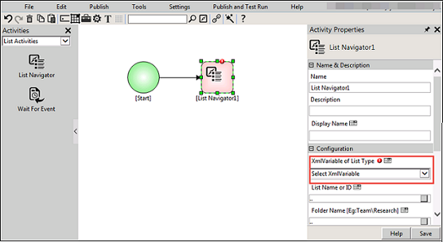

No
Changing the Scope of the DocLibrary Xml Variable
The scope (Choose the list item to work on options) of the DocLibrary XML Variable can be changed during the runtime. Once the scope is changed, the DocLibrary XML Variable will use the changed scope. You can change the scope of the DocLibrary XML Variable using the List Navigator activity during the workflow execution. Using this activity, you can also navigate the DocLibrary XML Variable to another list that has a similar schema.
To change the scope of the 'SP List/DocLibrary' XML Variable
- Click Activities and select List Activities from the options.
- Drag and drop the List Navigator activity.

- Select the XML variable, for which the scope need to be changed, from the XML Variable of List Type drop down list.
- Type/select the list name in the List Name or ID field. This property helps to change the list that need to work on. The list entered here should have the same schema of the list from which the XML Variable is created. If you do not want to change the working on list, then leave this field blank. Once you change the list, the XML Variable will use the changed one.
- For example, you have a list called Purchase Orders and another list called Approved Purchase Orders which has the same schema of the Purchase Orders list. If you want to add/update some item in the Approved Purchase Orders, you do not have to create separate XML Variables for both the lists. You can use the same XML Variables since both lists have the same schema. In this case, create a XML Variable for Purchase Orders. Enter the List Name as Approved Purchase Orders and set the scope as New. This will point to the Approved Purchase Orders list and add/update the item in that list.
- Click the drop-down and select the scope from the options. The available options are Current, New and List Query. Here you can change the scope.
Note: You can provide List Name or List Id or both. If List Name is provided then List Id is not required and vice versa. Both List Name and List Id should be provided in {ListId}ListName format.